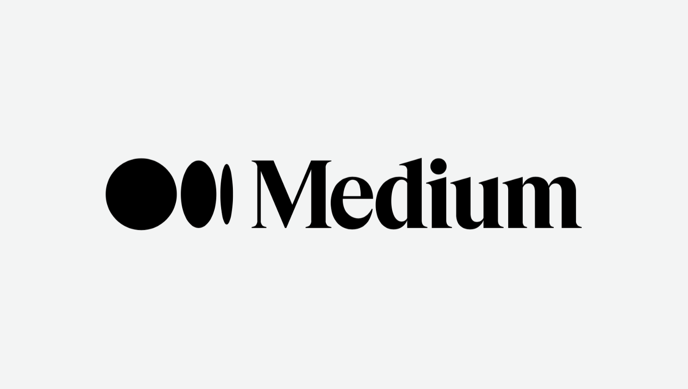
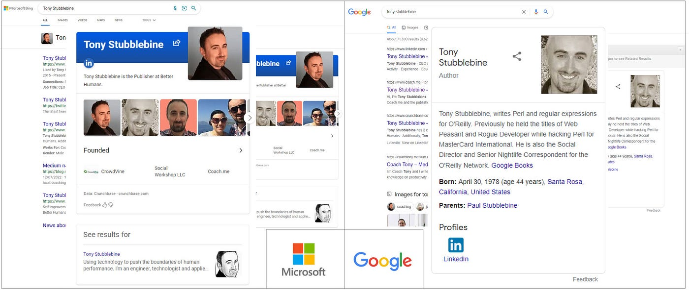
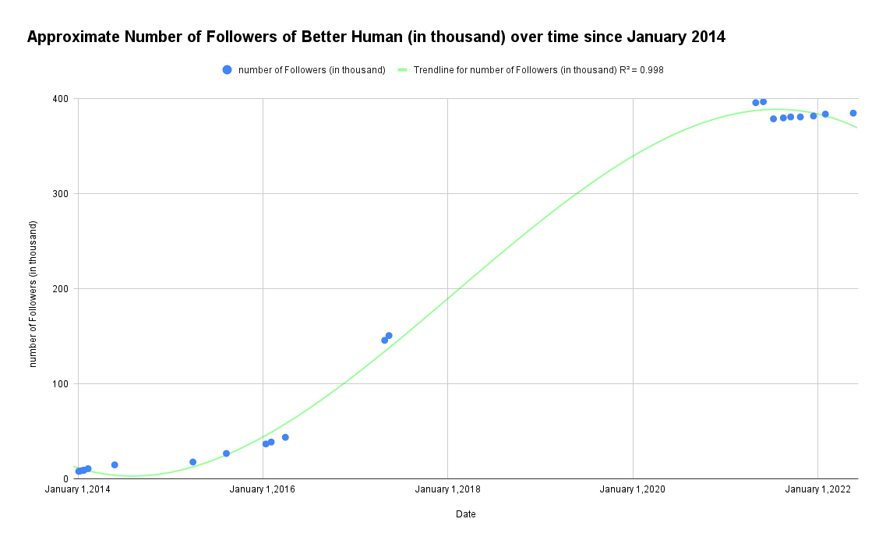

Jul 15
A Friday TechSays Essay about Medium’s writers and its new CEO

For connecting with the community of authors of Medium, the publishing platform that you are actually using for reading this Friday TechSay Essay, Tony Stubblebine the new CEO of medium was interviewed by Sinem Günel the founder of Medium Writing Academy, a startup for teaching and advising authors. I watched Sinem Günel interviewing Justin Cox from the writing cooperative a publication I am part of even if I had not still got the opportunity (skills) to publish on it and now I am watching again Sinem Günel interview Tony Stubblebine and I decided to dedicate this fourth iteration of the Friday TECh to this event of Medium changing CEO because this series of essays is published on this same platform and because I am a user of this platform since three years unlike Tony Stubblebine , the new Medium’s CEO who says that he is being involved in Medium since 10 years.
This Friday TECHsay will be mostly about giving my opinion using my worldview as a medium’s writer but I think that it is worth trying to know better who is Tony Stubblebine, the new CEO of Medium by first watching this interview and by making some searches around on the internet but for you it will be easier because you could just read the following paragraph.

According to this TechCrunch's article that is about the launch of what is now Coach.me, a startup founded by Tony Stubblebine and other folks like …. Tony Stubblebine previously worked at Wesabe, Odeo (where he worked with the Obvious trio), and O’Reilly Media the book publishing company that you know where Tony Stubblebine has published this book about regular expressions
Tony Stubblebine also founded CrowdVine. Crosby boasts gigs at Path, Engine Yard, and Songbird on his résumé. To say that Tony is an experienced technical entrepreneur who worked with Ev Williams the former Medium’s CEO who is giving his seat to Tony.
Tony Stubblebine is an engaged user of Medium because he has been managing one of the most successful publications on Tedium. This publication is Better Human, a publication about Productivity and self-improvement. For you to see the success of Better Human overtime I collected some metrics about the number of followers of this publication over time and built the following chart

Medium is not for building a following that we could use for selling something but for sharing ideas, knowledge, and information with the world. Information that could help people and organizations better see the world and take better actions that could make them the best people and organizations they seek to become. This is a very deep and ambitious goal to have for a publishing company like medium and a writer like me but let’s also remind ourselves that this ambitious goal is the core idea of the internet that was first designed to be as a place for sharing opinions, ideas, thoughts, knowledge, and information while it is better if this act of sharing lead to better human being inside a better community.
How many keyboard touches were typed for sharing what one could find interesting for others to know. We have been doing this since the beginning of the internet and before it, because we did it with other mediums of sharing like books. That’s what made me happy when I knew that Medium bought Glose a french publishing startup that works around book reading experience.
When I was connecting with the team of this french startup I was not aware that they were in discussion with medium’s team for a deal and during that time I was thinking that it was time for Medium to explore the book publishing industry and to see how it could connect the publishing platform that it has successfully created with book publishing because there are many writers eager to write books and readers like you eager to read them like how they have been reading interesting stories published on medium, stories that could often be the foundational idea of a book about to be written and published on a book publishing experience led by Medium. There are even opportunities for Medium to explore the crowd book writing because there are writers that medium could group and give a topic and all the editing and team communication tools need for them to try to write together a book.
The goal actually is to make the sharers, here writers, equally treated even if in terms of skills and quality of writing they are not equally distributed because the voice of everybody matters if we would want to emphasize ideas, thoughts, information, and knowledge generation, and sharing. if we want this, All we should do is be careful about what’s being shared because non-discriminating materials (here stories) that connect us and help us take collective actions are better than negative ones that break us into tribes of people who are not able to join hands and do something meaningful because each member of a given tribe thinks that the members of the tribe that he or she belongs to are better than others.
Medium’s management focuses on readers because of the needs of revenues but isn’t there other solutions that could allow Medium to focus more on the authors than it actually does. in my opinion, the most important part of this two-sided platform is to get writers to write more and more original stories even if those stories arent well written because the act of sharing ideas that underlies these stories is the most important thing. This is a long-term view because one could suppose that AI will be smart enough to be able to take bad writings and turn them into very good writing to some extent Grammarly is actually doing this and we could expect this to be more and more performant. You surely want to read well-written stories that are not like mine but in the perspective of Medium I think this quest for good writers is overvalued and the process of curation of writers could be modified for it to also exploit the wisdom of readers like you because instead of only incentivizing writers and relying on publication for curating authors and discovering them.
Medium could also incentivize (or just motivate) readers to get them involved into the curation and discovery of authors, this not by tracking their reading activities but by designing a curation and selection process in which the readers will proactively be part of while developing these AI models that will help writers level up their writing skills by turning bad writings into well-written stories because Medium is a two-sided marketplace of ideas and information in which no one side could go without the other side.
Medium needs both writers and readers but the actual strategy puts more weight on readers like you because of revenues. I am among those who think that writers are the most important part of this two-sided publishing platform and there could be other sources of revenue more profitable than this subscription model that is actually followed without telling anything about this risk highlighted by this following tweet, a risk that all publicly listed companies whose business models are driven by subscription are running:
For illustrating the idea of the paragraph above. This idea which was showing that in the near and far future Medium could own and operate an AI system that could turn bad writings of engaged writers like me and turn them into engaging stories for readers like you, I included the following tweets for you to get an idea about the state of AI when it comes to publishing
The economical model that a startup chooses to follow often defines what it could and could not do.
Medium has decided to take the path of the subscription model that we all know is a very important and trendy economic model that has proven to be successful and beloved by venture capitalists but as this story used a lot the word “better”, I think that one like me could be allowed to think that maybe for a publication company like Medium it could exist a better economical model than this subscription model and who knows maybe this new revenue model could be design around search with medium own implementation of a search engine or with a joint venture with Bing or Google or any other search engines. Why not all of them? because stories published on Medium are a gold mine that could be separated from all these SEO-driven articles that are published on marketing-driven blogs that are there for getting traction and selling us thing. This separation of the content of medium could be the opposite of what StackExchange did when they were hidden answers to internet users like you and me while showing them to search engine bots for referencing and ranking.
Why Medium could not hide its content to search engines allowing internet users to dig into its content and search on it by only using a specialized search engine purposefully built for indexing and ranking stories because the SEO algorithms for stories like those published on Medium aren’t the same as SEO as we actually know it and implement it.
SEO content is about telling the correct answers while stories are deeper …
said Tony Stubblebine in this interview with Sinem Günel.
Tony Stubblebine is right when he says that because unlike SEO content stories embed some ambiguity. They are not about yes/no, 1 or 0, meaning they are not binary because they often express opinions and sentiments that can have a meaning that depends on the reader's worldview what could mean that a search engine that deals with stories could not be the same in term of technical design and implementation as a search engine like the actual ones which are about finding the right answers based on keywords and PageRank and other search engines algorithms.
Stories have, we all know, their own structure plot, idioms, and what makes them become a different material than these article that are SEO-based, and I'm silencing all these opportunities that writers like me are providing to all these actual and coming ideas about natural language processing with AI something that in my eye is another future territory for Medium to explore because what it could gain from this territory could be way more than what it expects from this for sure important amount of money it is getting from reader like you. I am not underestimating the important amount of money you spend reading stories because it would be as gold if I was able to get this money but I am just trying to highlight something that could make you spend less while still getting very well-crafted stories that could help you and your organization in your way of being better. That’s what Medium is actually achieving well but I think that it could be because it could always become better and more if we share ideas and opinions like what I am actually doing.
You may think that I am again the subscription model that Medium has chosen but if you were following me since there both on medium and on Twitter you could see that I have said many positive words and ideas about the subscription model that distinguishes Medium from other platforms. For example, The following tweet as well as the ones that I have provided in the paragraphs above could illustrate that I have a positive opinion about the subscription model that companies and startups like Medium are adopting.
One could be an expert on something and express deep core transformational ideas without being followed by people and as of today recommendation engine of most publication platforms the number of following plays a role in the ranking and selection algorithm
Tony said that people wouldn’t have written deep interesting stories if they were not incentivized. I have actually written and shared 703 articles and I have made no money doing this but I am among those who got the chance to keep writing and sharing even if there is any source of revenue behind this writing experience. Then Tony’s opinion as true as it can be don’t apply to writers like me because I am still there writing and sharing with you and I am happy if you read it leaving me with my empty pocket but even if you had not read this I would also stay happy because the only fact of knowing that I have publicly shared some words with he ‘’external world” is signal of satisfaction and accomplishment. For one like me who is living in an underdeveloped country, writing is an opportunity because it doesn’t require so much of money and is one of the things that really transformed our society by helping us build all these things that require money and writing still has this transformative power on our society that’s why platforms like Medium matter as well as readers like you and writers like me.
Here is the interview that inspired this Tech Essay